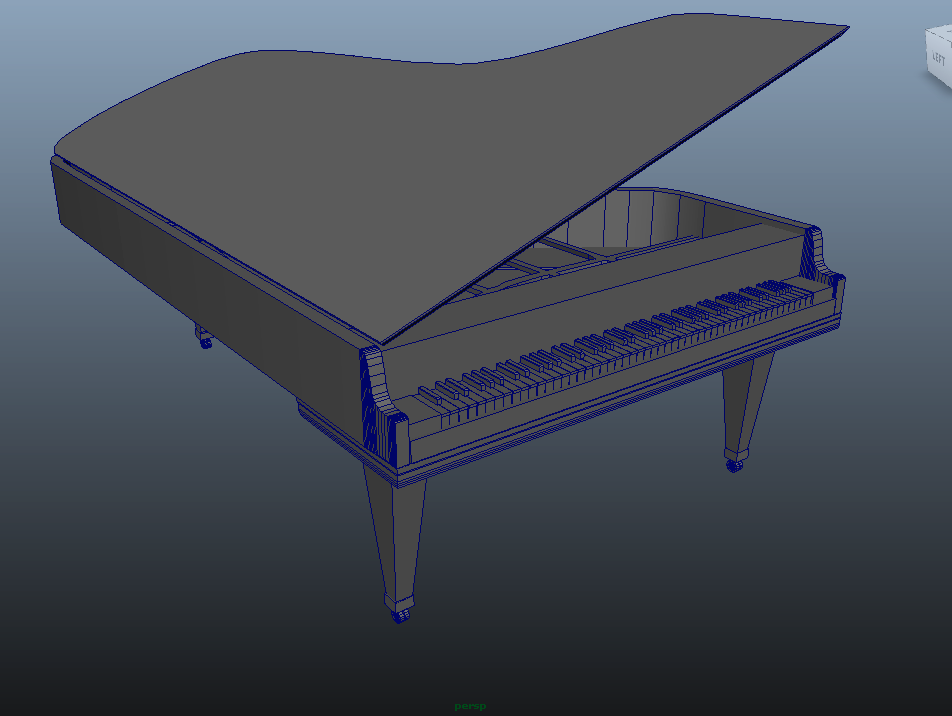
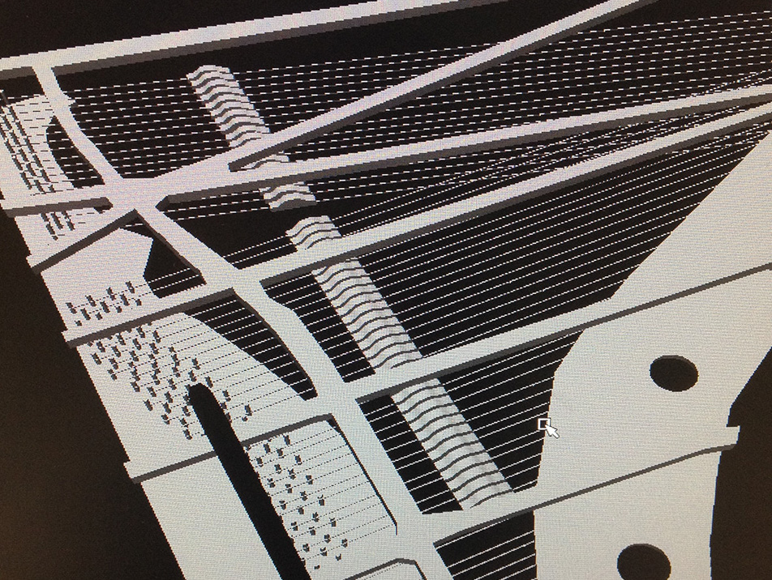
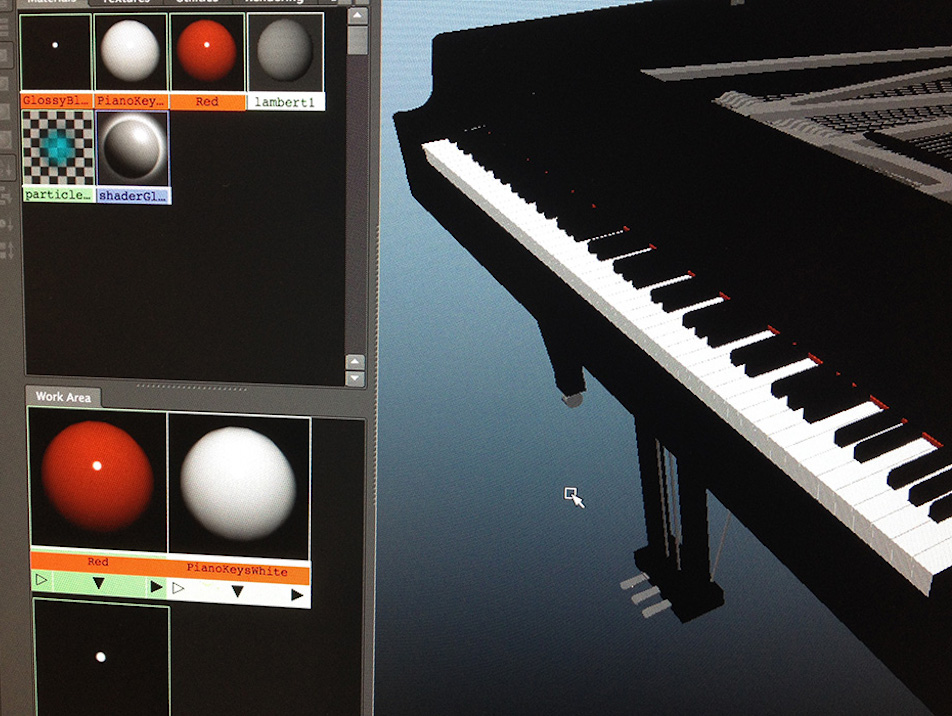
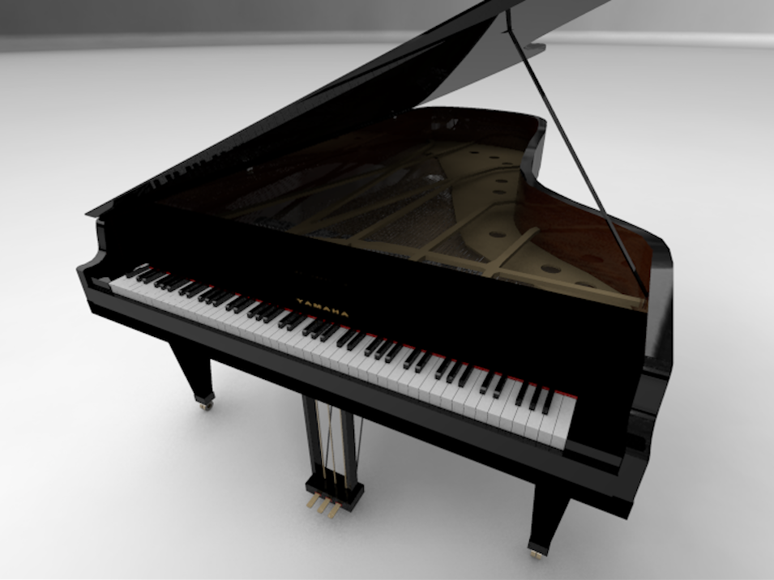
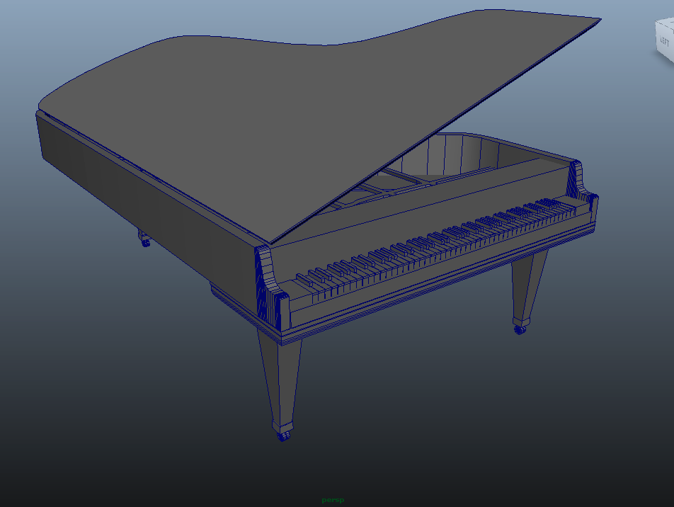
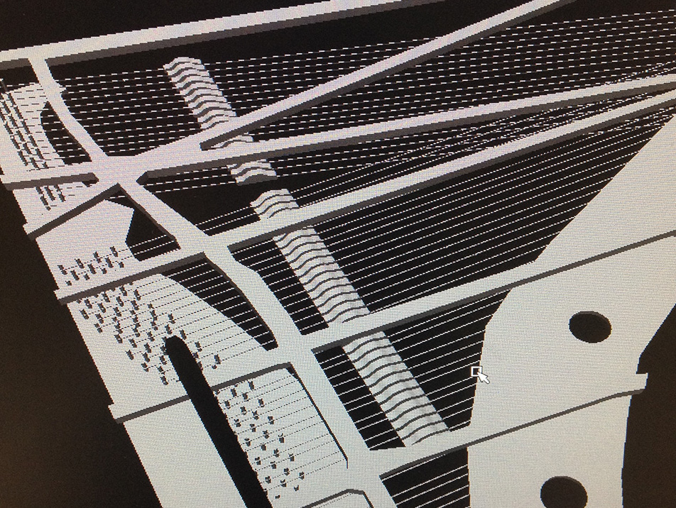
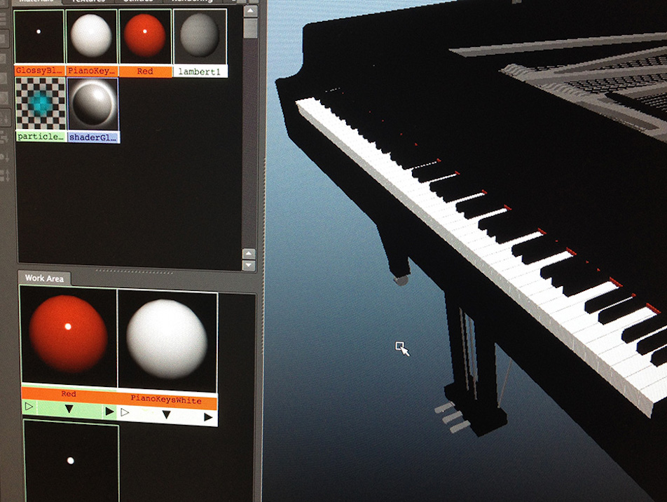
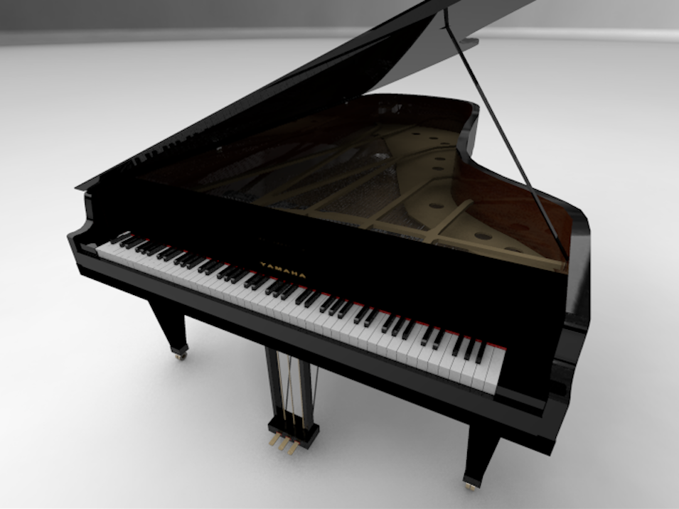

Inside the life of a curious 20s-something doodling, writing, and wandering about New York City
My final project for the GRAP E3115 course (Advanced Computer Modeling and Animation) during my undergraduate studies at Columbia University was an animation of a Yamaha grand piano within an enclosed white stage playing to the classic tune of "Für Elise". Never having taking a piano lesson but always admiring the grace and elegance of the instrument and its sound, this was a rewarding project to undertake and complete.
3-D modeling and visualization tools used include Adobe Photoshop, Maya, and Final Cut Pro X.
 






